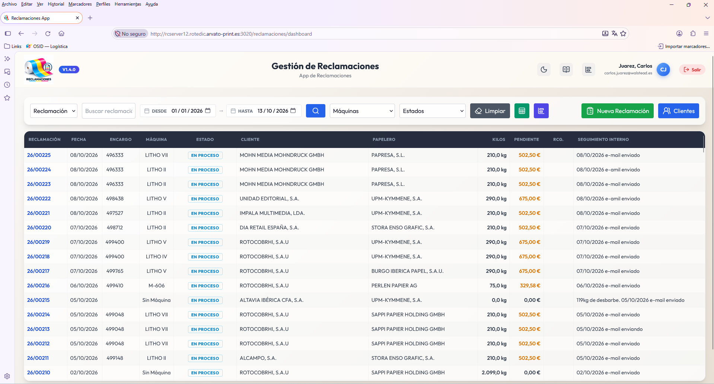
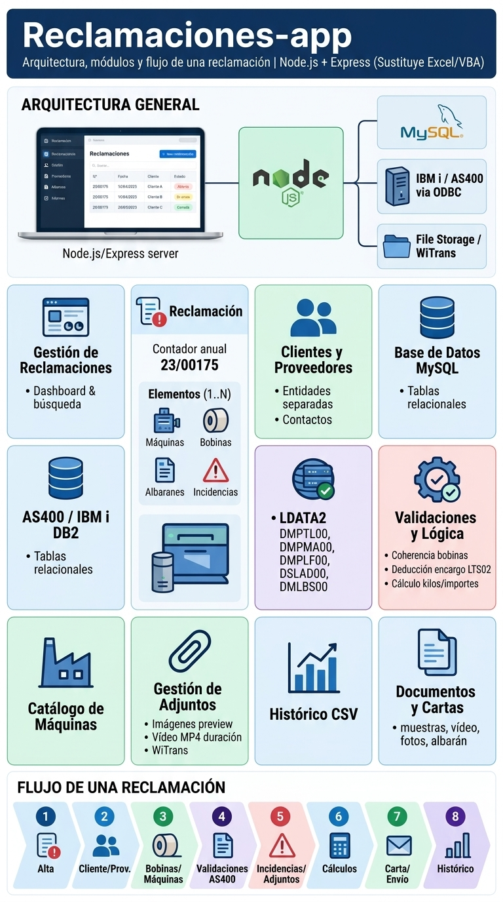

Sistemas Críticos · Calidad Industrial
● En Producción
Reclamaciones-app · Bobinas de Papel
Plataforma web integral que digitaliza y centraliza el ciclo de vida completo de no conformidades sobre materia prima en rotativas, sustituyendo un sistema manual disperso en hojas Excel y macros VBA.

Captura de Producción
Interfaz Operativa del Sistema
Vista real de la aplicación en producción con datos operativos.
Ampliar interfaz
Lámina de Arquitectura Técnica
Esquema Técnico & Integración
Flujos de datos, modelos DB2, lógica de negocio y componentes.
Ampliar esquema técnico
280–300 t/año
Papel defectuoso gestionado
+45k–65k €/año
Abonos netos recuperados
-60%
Tiempo medio por expediente
Pipeline Operativo & Ciclo de Vida
1
2
3
4
5
6
Módulos Funcionales Nucleares
Arquitectura de Datos, Protocolos & Integración
Node.js
Express
AS400 / IBM i DB2
ODBC
MySQL
 Multer
Multer
 Paperless
Paperless
Multer
Paperless
Aspectos Técnicos Clave:
- Conexión ODBC en tiempo real con AS400 / IBM i (DB2): Consulta directa al esquema operacional del ERP para validar pedidos, albaranes y bobinas al instante.
- Modelo de datos relacional 1..N: Un único expediente unifica múltiples máquinas de planta, bobinas afectadas y defectos tipificados con deducción automática de encargos.
- Pipeline multimedia y peritaje: Generación automática de miniaturas para fotografías y transcodificación con minutaje de vídeos MP4 para sustentar las pruebas frente al proveedor papelero.
- Generador documental en un clic: Emisión automática de cartas formales de reclamación con anexos referenciados y registro de auditoría.